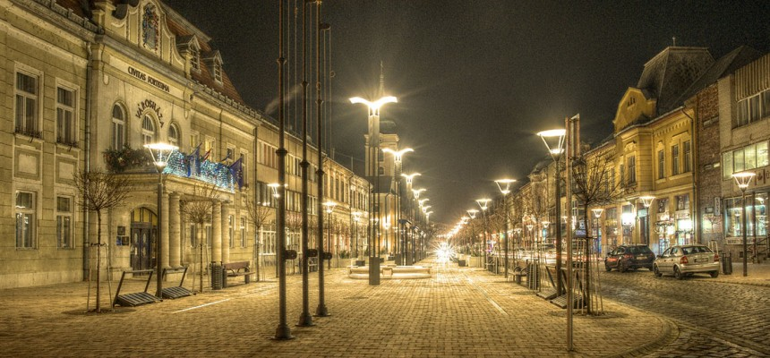

Úgy gondolom, széles érdeklődési körrel rendelkezem. Mint például nagyon szeretek olvasni. Kedvenc költőm, az nem más mint F.Scott Fitzgerald. Számtalan remek könyvet írt az 1920-as évek során, de az én kedvencem az a "The Great Gatsby". Véleményem szerint, kiváló író volt és a történetei kimagaslóak, eltérőek voltak mások irományaival szemben.
Ezenkívül nagyon szeretek idegennyelvekkel, kultúrákkal megismerkedni. Jelenleg a Koreai nyelvet szeretném jobban elsajátítani, de nem igazán akad rá mostanában elég időm.
Emellett mindig is nagy szerepet töltött be az életemben a zene. Tanultam gordonkázni, gitározni, és a mai napig tervbe van véve a zongora is! A zongora kellemes hangjánál megnyugtatóbb nincs.
Balassagyarmatról

Balassagyarmat éjszaka
Balassagyarmat kedvező elhelyezkedése miatt a területe már a rézkorban is lakott. A honfoglalás során a későbbi település nevét adó Gyarmat törzs telepedett itt le, első írásos említése 1244-ből származik. A török hódoltság idején várát lerombolták, a város elnéptelenedett. Több sikertelen kísérlet után 1690-ben telepítették újjá a települést.
A 18. században fellendült Balassagyarmat ipara és kereskedelme, aminek köszönhetően 1770-ben a városba helyezték a vármegye székhelyét. Az első világháború után a város határában meghúzott demarkációs vonalat 1919-ben átlépte a Csehszlovák Légió, majd január 15-én megszállta Balassagyarmatot.
A város lakosai és a környéken állomásozó magyar katonák Károlyi Mihály tiltásának ellenére január 29-én fegyveresen kiűzték a megszálló erőket. A polgárok hősies tettéért a város megkapta a „Civitas Fortissima” (A legbátrabb város) címet, és január 29-e lett a város ünnepnapja. Az 1950-es megyerendezés során Nógrád megye új székhelyéül Balassagyarmat helyett Salgótarjánt jelölték ki, a megyei tanács tényleges áthelyezésére 1952-ben került sor.